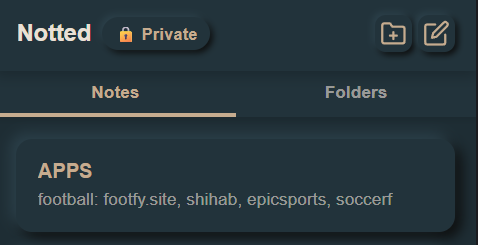
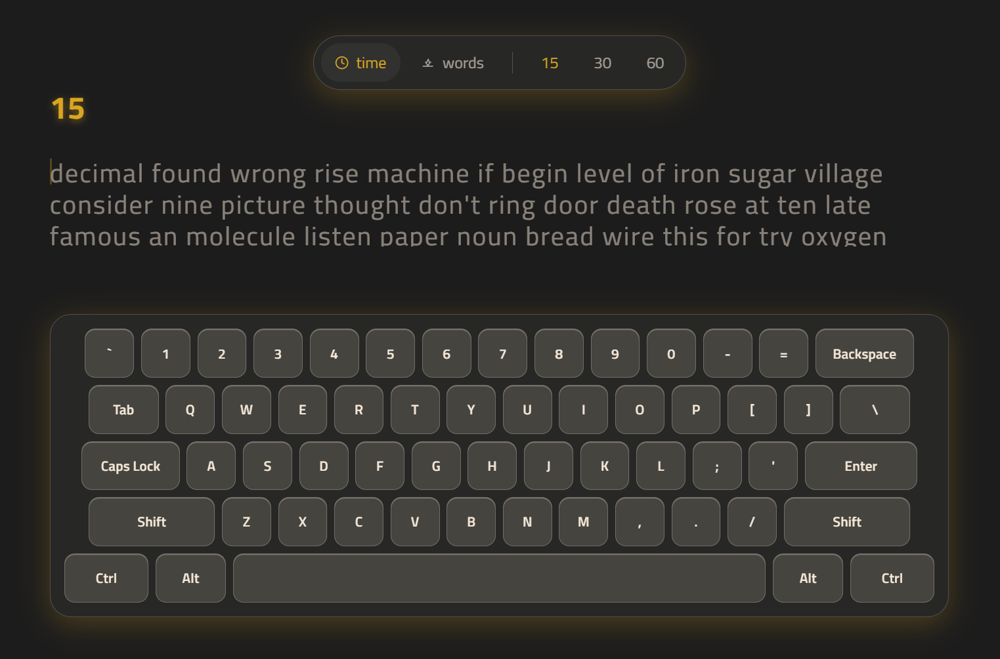
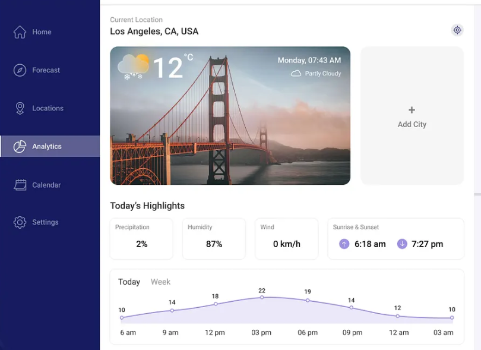
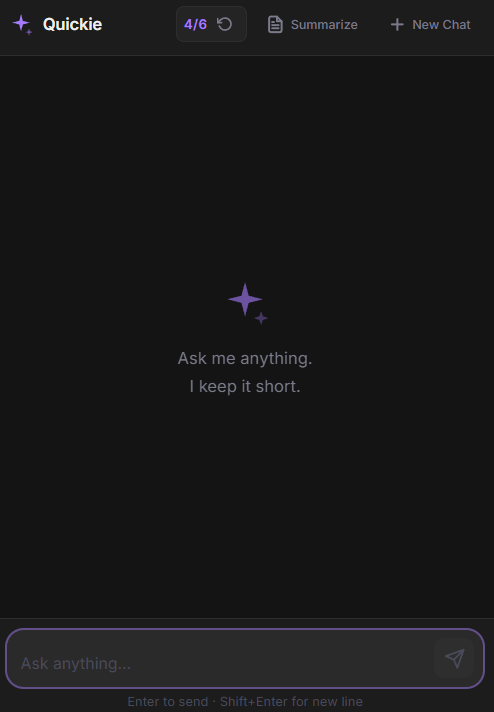

A lightweight, privacy-first Chrome extension for fast, local note-taking. It features 100% local storage, nested folder organization, and a private vault—with zero tracking or data collection.
About
I’m a frontend engineer with expertise in building modern, responsive user interfaces using the MERN stack. I focus on creating accessible, pixel-perfect web applications and take pride in turning complex requirements into clean, usable products. I work best at the intersection of design and engineering, where thoughtful UX meets scalable and maintainable frontend code. I specialize in building component-driven applications using React and integrating them with backend services built in Node.js, Express, and MongoDB when required. I lead development efforts across UI systems, reusable components, and frontend architecture, working closely with designers and backend engineers to ensure accessibility and performance are built into the foundation of every product. Currently, I’m focused on developing frontend systems and scalable UI patterns within modern web applications, often working on design systems, reusable components, and application-level architecture. I collaborate closely with teams to ensure consistency across interfaces and to maintain a strong focus on usability, performance, and accessibility in production environments. Previously, I’ve worked across a range of environments — from fast-moving startups to product-driven engineering teams and larger development organizations. I’ve contributed to projects involving full-stack MERN applications, dashboard systems, API integrations, and scalable frontend architectures, all focused on delivering real-world user value. Outside of my day-to-day work, I enjoy building personal projects that explore full-stack web development and modern UI engineering patterns. These include API-driven applications, authentication systems, and reusable component libraries that reflect real production use cases. These experiences have shaped how I think about building products that are both scalable and user-focused.
About
I'm a Frontend Developer focused on building responsive and accessible web applications using React, JavaScript, TypeScript, HTML, and CSS. I build component-based UIs, integrate REST APIs, and work with modern frontend tooling like Git and browser DevTools. I focus on writing clean, maintainable code and building reusable UI components that scale across different projects. My work is centered on performance, accessibility, and creating interfaces that are easy to maintain and extend.
Skills
| Languages | Frameworks & Libraries | Tools | Design |
|---|---|---|---|
| HTML5 | React | Git & GitHub | Figma |
| CSS3 | Next.js | VS Code | UI Design |
| JavaScript (ES6+) | Tailwind CSS | Chrome DevTools | Wireframing |
| TypeScript | Redux Toolkit | Vite | Prototyping |
| Sass/SCSS | React Router | Postman | Accessibility (a11y) |
Projects

Notted Extension

FluentType
A minimalist, web-based typing application to track your speed and accuracy. It features real-time WPM, customizable difficulty settings, and detailed performance graphs.

Weatherly
A minimalist weather web app for instant, real-time climate tracking. It features hyper-local forecasts, interactive radar maps, and severe weather alerts—with zero ads or location tracking.

Quickie
This AI chatbot lets you chat naturally and select items directly within the conversation. You can instantly ask questions about your selected items to get immediate details, pricing, and personalized recommendations.